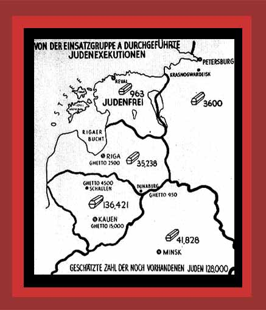

| The German government sent into its occupied Soviet Union and Baltic nations four special action squads (Einsatzgruppen) to murder Jews wherever they could be found. In the report of one such squad, a map was included with coffins drawn to signify the Jews they murdered, along with their total and location. Documentation: Democide. Source: "The Undeniable Holocaust". Map is from "Nazi Conspiracy and Aggression," Washington, U.S. Government Printing Office, 1946, Vol. VIII. |